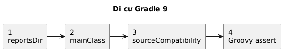
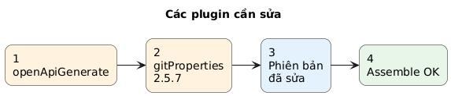
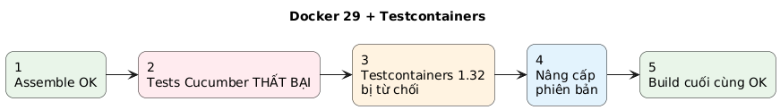
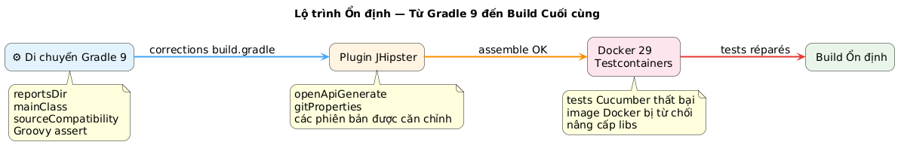
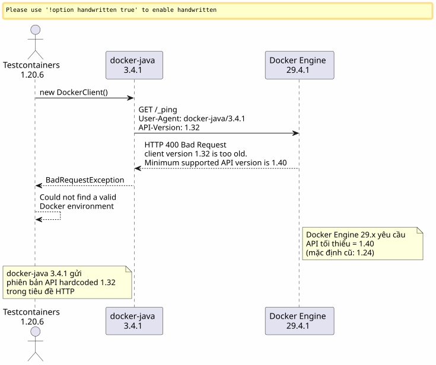
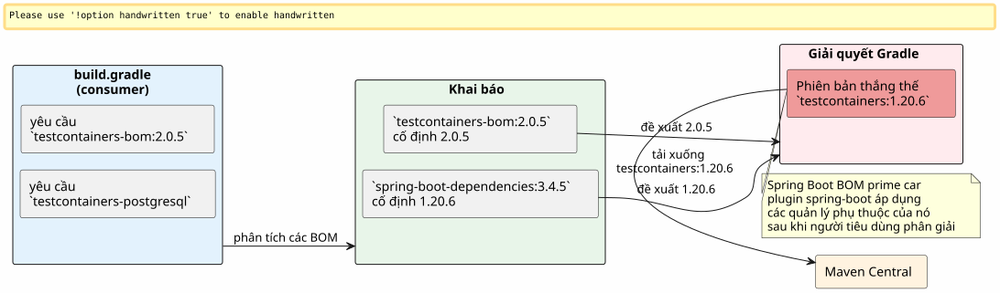
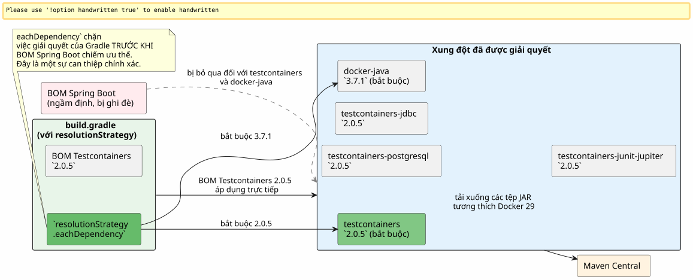

Khi Gradle 9, Docker 29 và Testcontainers xung đột gay gắt: debugging một build JHipster
Đăng ngày 25 April 2026
- Bối cảnh: một dự án JHipster, một bản build không còn tải được nữa
- Lỗi 1: biến ảo `reportsDir
- Lỗi 2:
main = "…"không còn tồn tại trong Gradle 9 - Lỗi 3:
sourceCompatibilitykhông còn là một thuộc tính của dự án - Lỗi 4: khẳng định Groovy ba toán hạng
- Lỗi 5: phụ thuộc ngầm định
compileKotlin→ `openApiGenerate - Lỗi 6:
generateGitPropertiesbị lỗi tại `FilterOutputStream.write() - Cuối cùng: Testcontainers xuất hiện
- Giai đoạn 1: hướng tiếp cận docker-java
- Giai đoạn 2: tìm kiếm web và luồng điều hướng GitHub
- Giai đoạn 3: cái bẫy của các artifact được đổi tên
- Giai đoạn 4: bắt buộc phân giải
- Kết quả cuối cùng
- Bảng tổng hợp các chỉnh sửa
- Kết luận
Bạn đã từng trải qua khoảnh khắc khi một điều đơn giản`./gradlew build`mà bạn chạy hàng trăm lần mỗi ngày bỗng nhiên bị treo với một lỗi chưa từng thấy? Hãy nhân điều đó với mười một lỗi liên tiếp, cộng thêm một liều lượng lớn sự không tương thích của Docker Engine 29, rắc thêm Gradle 9 làm biến mất các API mà chúng ta đã sử dụng suốt mười năm qua. Đây là toàn bộ nhật ký chi tiết.
Mục tiêu: hiển thị chuỗi các điểm không tương thích.

Biểu đồ 2 — Các plugin JHipster không tương thích
Mục tiêu: cô lập các plugin bị lỗi.

Mục tiêu: lỗi runtime.

một cách khác để hình dung điều đó

Bối cảnh: một dự án JHipster, một bản build không còn tải được nữa
Dự án`edster`là một ứng dụng JHipster được tạo vào năm 2024. Root build script`build.gradle`đã duy trì ổn định trong nhiều tháng. Sau đó, chúng tôi quyết định nâng cấp phiên bản:
Thành phần |
Phiên bản mục tiêu |
Gradle |
9.4.1 |
Java |
21.0.11-tem (Eclipse Temurin) |
JHipster |
8.x (framework`tech.jhipster:jhipster-framework:8.11.0`) |
Spring Boot |
3.4.5 |
Kotlin |
2.3.0 |
Docker Engine |
29.4.1 (API 1.54) |
Việc thay đổi phiên bản Java được thực hiện thông qua SDKMAN:
sdk use java 21.0.11-temLần khởi chạy đầu tiên:
$ ./gradlew build --no-daemon
FAILURE: Build failed with an exception.
* Where:
Build file '/home/.../edster/build.gradle' line: 18
* What went wrong:
An exception occurred applying plugin request [id: 'jhipster.cucumber-conventions']
> Failed to apply plugin 'jhipster.cucumber-conventions'.
> Could not create task ':cucumberTest'.
> Could not create task ':consoleLauncherTest'.
> Could not set unknown property 'reportsDir' for task ':consoleLauncherTest'Chúng ta thậm chí còn chưa thoát khỏi giai đoạn nạp build script. Vấn đề nằm ở`buildSrc/src/main/groovy/jhipster.cucumber-conventions.gradle`Vui lòng cung cấp văn bản cần dịch.
Lỗi 1: biến ảo `reportsDir
Kịch bản`jhipster.cucumber-conventions.gradle`chứa :
tasks.register('consoleLauncherTest', JavaExec) {
dependsOn(testClasses)
String cucumberReportsDir = file("$buildDir/reports/tests")
outputs.dir(reportsDir) // <-- reportsDir n'existe PAS
classpath = sourceSets["test"].runtimeClasspath
main = "org.junit.platform.console.ConsoleLauncher"
// ...
}Biến được định nghĩa là`cucumberReportsDir`. Cái được sử dụng là`reportsDir`-- cái mà không được định nghĩa ở bất cứ đâu.
Sửa lỗiVui lòng cung cấp nội dung cần dịch.outputs.dir(cucumberReportsDir)
Lỗi 2: main = "…" không còn tồn tại trong Gradle 9
Nhắc nhở ngay lập tức:
Could not set unknown property 'main' for task ':consoleLauncherTest' of type org.gradle.api.tasks.JavaExec.Gradle 9 xóa bỏ thuộc tính`main`vì lợi ích của`mainClass`về các tác vụ`JavaExec`Vui lòng cung cấp văn bản tiếng Pháp cần dịch.
Sửa lỗiVui lòng cung cấp văn bản cần dịch.mainClass = "org.junit.platform.console.ConsoleLauncher"
Lỗi 3: sourceCompatibility không còn là một thuộc tính của dự án
Lỗi mới:
Could not set unknown property 'sourceCompatibility' for root project 'edster' of type org.gradle.api.Project.Script gốc có:
sourceCompatibility=17
targetCompatibility=17Gradle 9 xóa bỏ các thuộc tính này ở cấp root. Chúng phải nằm trong một khối`java`Vui lòng cung cấp văn bản tiếng Pháp cần dịch.
Sửa lỗiVui lòng cung cấp văn bản cần dịch.
java {
sourceCompatibility = JavaVersion.VERSION_21
targetCompatibility = JavaVersion.VERSION_21
}Lỗi 4: khẳng định Groovy ba toán hạng
Script cũ bao gồm:
assert System.properties["java.specification.version"] == "17" || "21" || "24"Trong Groovy,"21" et "24"`là các chuỗi truthy. Biểu thức giải ra thành(… == "17") || true || true`, điều này luôn đúng — nhưng cú pháp không hợp lệ cho khẳng định nghiêm ngặt mong muốn.
Sửa lỗiVui lòng cung cấp văn bản cần dịch.
assert System.properties["java.specification.version"] in ["17", "21", "23", "24"]Lỗi 5: phụ thuộc ngầm định compileKotlin → `openApiGenerate
Quá trình build đang tiến triển. Biên dịch Kotlin thành công. Sau đó:
Task ':compileKotlin' uses this output of task ':openApiGenerate'
without declaring an explicit or implicit dependency.Gradle 9 từ chối các phụ thuộc ngầm định giữa các tác vụ. Vì`compileKotlin`đọc các nguồn được tạo bởi`openApiGenerate`, cần phải khai báo liên kết.
Sửa lỗitrong`build.gradle`Hãy nhập your_name vào trường tên.
afterEvaluate {
tasks.named("compileKotlin").configure {
dependsOn(tasks.named("openApiGenerate"))
}
}Le `afterEvaluate`là cần thiết vì`openApiGenerate`là một tiện ích mở rộng (plugin OpenAPI Generator) chứ không phải là một tác vụ có thể truy cập trực tiếp trong giai đoạn cấu hình.
Lỗi 6: generateGitProperties bị lỗi tại `FilterOutputStream.write()
Quá trình biên dịch Java thành công. Các tài nguyên được xử lý. Sau đó:
> Task :generateGitProperties FAILED
No signature of method: java.io.FilterOutputStream.write() is applicable for argument types: (Integer) values: [103]Plugin`gradle-git-properties`phiên bản 2.5.0 không tương thích với Java 21 / Gradle 9. Một lỗi nội bộ cố gắng gọi`write(int)`via Groovy trên một luồng đã đóng nó.
Sửa lỗitrong`gradle.properties`Hãy cung cấp văn bản bạn muốn dịch.
gitPropertiesPluginVersion=2.5.7Cuối cùng: Testcontainers xuất hiện
Cho đến nay, đó hoàn toàn là "build script debugging". Mỗi lỗi đều là một sự không tương thích của Gradle 9 hoặc Java 21 trong các kịch bản build. Sau sáu lần sửa lỗi ở trên, cái`./gradlew assemble`vượt qua thành công.
Nhưng`./gradlew build`cũng thực thi các bài kiểm tra, và các bài kiểm tra Cucumber sử dụng Testcontainers để khởi chạy một PostgreSQL tạm thời.
Could not find a valid Docker environment.
EnvironmentAndSystemPropertyClientProviderStrategy: failed with exception BadRequestException
(Status 400: {"message":"client version 1.32 is too old. Minimum supported API version is 1.40"}
UnixSocketClientProviderStrategy: failed with exception BadRequestException
(Status 400: {"message":"client version 1.32 is too old. Minimum supported API version is 1.40"}Testcontainers không thể giao tiếp với Docker. Hai chiến lược khác nhau (biến môi trường + socket Unix) đều thất bại với cùng một lỗi.

Giai đoạn 1: hướng tiếp cận docker-java
Phản xạ đầu tiên: Docker Java client được Testcontainers sử dụng sẽ gửi phiên bản API`1.32`trong handshake HTTP của nó, nhưng Docker Engine 29.4.1 yêu cầu tối thiểu là`1.40`Vấn đề nằm ở phía client, không phải ở daemon.
Kiểm tra phiên bản docker-java được giải quyết bởi Testcontainers 1.20.6:
$ ./gradlew dependencies --configuration testRuntimeClasspath | grep docker-java
+--- com.github.docker-java:docker-java-api:3.4.1
+--- com.github.docker-java:docker-java-transport:3.4.1docker-java 3.4.1, từ Testcontainers 1.20.6. Phiên bản công khai mới nhất của docker-java là 3.5.1. Hãy thử buộc nâng cấp phiên bản thông qua`resolutionStrategy`trong khối`configurations` de `build.gradle`Vui lòng cung cấp văn bản cần dịch.
configurations {
all {
resolutionStrategy.eachDependency { details ->
if (details.requested.group == "com.github.docker-java"
&& details.requested.name.startsWith("docker-java")) {
details.useVersion("3.5.1")
}
}
}
}Chạy lại build. Vẫn lỗi đó:`client version 1.32 is too old`Vui lòng cung cấp văn bản cần dịch.
Kiểm tra cache Gradle: các file JAR đã được tải lại thành công, nhưng lỗi vẫn còn. docker-java 3.5.1 vẫn gửi`1.32`. Do đó, phiên bản này KHÔNG đủ cho Docker Engine 29.4.1.
Hành động thanh lọc: xóa hoàn toàn bộ nhớ đệm Gradle, chỉ để cho chắc chắn:
rm -rf ~/.gradle/caches
rm -rf /path/to/project/.gradleKhởi động lại hoàn toàn sau khi xóa sạch. Vẫn lỗi tương tự.
Giai đoạn 2: tìm kiếm web và luồng điều hướng GitHub
docker-java 3.5.1` là không đủ. Giờ chỉ còn cách tìm xem có ai đã gặp chính xác vấn đề này chưa.
Tìm kiếm mục tiêu trên các issue của testcontainers-java và docker-java:
site:github.com/testcontainers "client version 1.32 is too old"
site:github.com/docker-java "client version 1.32" Docker Engine 29Kết quả tức thì đầu tiên:
-
testcontainers-java#11210—
[Bug]: client version 1.32 is too old. Minimum supported API version is 1.44 -
testcontainers-java#11212—
[Bug]: Docker 29.0.0 could not find a valid Docker environment -
testcontainers-java#11491—
[Bug]: Incompatibility in Ubuntu Github runners with Docker Engine 29.1.*
Luồng dẫn hướng đã rõ ràng: Docker Engine 29.x đã nâng phiên bản API tối thiểu của 1.24(lỗi cũ) tại`1.40`. Testcontainers 1.20.x sử dụng docker-java 3.4.x, phiên bản thương lượng phiên bản API bằng cách gửi`1.32`. Daemon từ chối một cách lịch sự nhưng kiên quyết.
Trong issue #11491, một người bảo trì trả lời:
Vui lòng cung cấp văn bản cần dịch. Chào bạn, tôi có một dự án đang chạy với phiên bản 2.0.3 trên một GH runner với engine 29.1 và nó hoạt động bình thường. Mọi người vui lòng kiểm tra xem có xung đột phiên bản nào không? Vui lòng nhớ rằng tất cả các module đều được tiền tố bằng`testcontainers-Vui lòng cung cấp văn bản cần dịch. Vì vậy, bắt đầu từ phiên bản 2.x, chúng ta đã chuyển từ`postgresql to testcontainers-postgresql Please provide the text you would like me to translate.
Câu trả lời này chứahai thông tin quan trọngVui lòng cung cấp văn bản cần dịch.
-
Testcontainers 2.0.3+ giải quyết vấn đề này
-
Các mô-đun đã đượcđược đổi tên với tiền tố `testcontainers-
Giai đoạn 3: cái bẫy của các artifact được đổi tên
Việc đổi tên diễn ra một cách triệt để. Trong Testcontainers 2.x, không còn tên cũ nào hoạt động dưới tên gọi đó nữa:
Tên cũ (1.x) |
Tên mới (2.x) |
|
|
|
|
|
|
|
không thay đổi |
Lần thử đầu tiên: áp dụng BOM Testcontainers 2.0.5 và tên các artifact mới trong`build.gradle`Vui lòng cung cấp văn bản cần dịch.
dependencies {
testImplementation platform("org.testcontainers:testcontainers-bom:2.0.5")
testImplementation "org.testcontainers:testcontainers-postgresql"
testImplementation "org.testcontainers:testcontainers-jdbc"
testImplementation "org.testcontainers:testcontainers-junit-jupiter"
testImplementation "org.testcontainers:testcontainers"
}./gradlew build
FAILURE: Could not find org.testcontainers:jdbc:2.0.5.
Could not find org.testcontainers:junit-jupiter:2.0.5.BOM của testcontainers-bom là không đủ.Tại sao? Bởi vì Spring Boot 3.4.5 cung cấp BOM quản lý phụ thuộc riêng của nó (spring-boot-dependencies) người màthắngtrên BOM của Testcontainers trong giải quyết chuyển tiếp. Spring Boot khắc phục`testcontainers` à 1.20.6, và do đó tất cả các artifact không nằm rõ ràng trong BOM Spring Boot (như các bản mới`testcontainers-*) phân giải về các tên cũ`1.20.6-- vốn không còn tồn tại trong phiên bản này.
Khi kiểm tra`dependencies --configuration testRuntimeClasspath`, ta thấy:
+--- org.testcontainers:testcontainers -> 1.20.6 (*)
| \--- org.testcontainers:testcontainers:2.0.5 -> 1.20.6Le `→`cho biết sự thay thế: Testcontainers 2.0.5 được yêu cầu, nhưng Spring Boot bắt buộc`1.20.6`Vui lòng cung cấp văn bản cần dịch.

Giai đoạn 4: bắt buộc phân giải
Chiến lược trở nên kép:
-
Épôngage docker-java về phiên bản 3.7.1 (được kiểm tra là tương thích với Docker Engine 29)
-
Épêcher Testcontainers core ở phiên bản 2.0.5 bằng cách bỏ qua BOM của Spring Boot

Hiệu chỉnh cuối cùngtrong`build.gradle`Hãy cung cấp văn bản cần dịch.
configurations {
all {
resolutionStrategy.eachDependency { details ->
if (details.requested.group == "com.github.docker-java"
&& details.requested.name.startsWith("docker-java")) {
details.useVersion("3.7.1")
}
if (details.requested.group == "org.testcontainers"
&& details.requested.name == "testcontainers") {
details.useVersion("2.0.5")
}
}
}
}
dependencies {
testImplementation platform("org.testcontainers:testcontainers-bom:2.0.5")
testImplementation "org.testcontainers:testcontainers-jdbc"
testImplementation "org.testcontainers:testcontainers-junit-jupiter"
testImplementation "org.testcontainers:testcontainers-postgresql"
testImplementation "org.testcontainers:testcontainers"
// ... autres dépendances Spring Boot
}Le resolutionStrategy.eachDependency`là cách duy nhất để bỏ qua BOM`spring-boot-dependencies`được quản lý bởi plugin Spring Boot. Bài kiểm tra tính bằng nhau trên`details.requested.name == "testcontainers"`có chủ ý hạn chế: chúng ta chỉ bắt buộc module `core. Các module`testcontainers-*`tuân theo BOM của Testcontainers 2.0.5 mà chúng ta đã khai báo rõ ràng.
Kết quả cuối cùng
$ ./gradlew build --no-daemon
> Task :consoleLauncherTest
[2 containers found]
[2 containers started]
[2 containers successful]
BUILD SUCCESSFUL in 1m 16sTestcontainers 2.0.5 + docker-java 3.7.1 cuối cùng đã có thể tạo các container PostgreSQL thông qua Docker Engine 29.4.1. Lỗi nghiệp vụ cuối cùng (HTTP 500 trong bài test Cucumber) là một vấn đề ứng dụng hoàn toàn độc lập với build script.
Bảng tổng hợp các chỉnh sửa
Hãy nhấp vào Settings để thay đổi cài đặt của bạn. |
Tệp | Vấn đề | Sửa lỗi |
|---|---|---|---|
1 |
|
Biến số`reportsDir`không tồn tại |
|
2 |
|
`main`đã bị loại bỏ trong Gradle 9 |
|
3 |
|
`sourceCompatibility`cấp cao nhất bị cấm trong Gradle 9 |
Khối`java { sourceCompatibility = JavaVersion.VERSION_21 }` |
4 |
|
Cú pháp Groovy Assertion không hợp lệ |
|
5 |
|
Phụ thuộc ngầm định`compileKotlin`Hãy cung cấp văn bản bạn muốn dịch. |
|
6 |
|
`gitPropertiesPluginVersion`không tương thích Java 21 |
|
7 |
Bộ nhớ đệm Gradle |
docker-java 3.5.1 đã được kiểm tra, đã giải quyết nhưng chưa đủ |
Xóa sạch + chuyển sang docker-java 3.7.1 |
8 |
|
Testcontainers 1.20.6 không tương thích với Docker Engine 29 |
Épít Testcontainers 2.0.5 + prefix`testcontainers-*`+ resolutionStrategy so với Spring Boot BOM |
Kết luận
Nếu bản build JHipster/Gradle của bạn bị lỗi sau khi nâng cấp lên Gradle 9 + Docker Engine 29, các lỗi sẽ được chia thành hai loại:
Lỗi build script(6 mục đầu tiên): Gradle 9 loại bỏ các thuộc tính và cú pháp đã hoạt động trong nhiều năm (sourceCompatibility=, main =, reportsDir). Đó là những cuộc di chuyển cơ học một khi chúng ta đã biết API mới.
Lỗi runtime Docker(2 cái cuối cùng): Docker Engine 29.4.1 loại bỏ các API client < 1.40. Testcontainers 1.20.6 (do Spring Boot 3.4.5 áp đặt) sử dụng docker-java 3.4.1 gửi bản 1.32. Chỉ có Testcontainers 2.0.5 + docker-java 3.7.1 mới giải quyết được vấn đề, cùng với việc đổi tên các artifact và ép buộc phiên bản thông qua`resolutionStrategy.eachDependency`như là cách duy nhất để ghi đè BOM ngầm định của Spring Boot.
Script build Gradle tại gốc của dự án hiện đã sạch.`./gradlew build`chuyển sang Java 21, Gradle 9.4.1, Spring Boot 3.4.5 và Docker Engine 29.4.1.